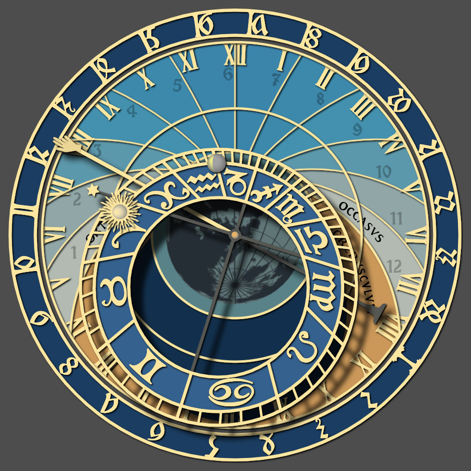

Prague Astronomical Clock Simulator

Animation
Play and Fast-Forward buttons (▶️ ⏩) are available to watch time progress quickly, by the minute or by the day.
Click Stop (⏹) to end the animation.
You can also see rapid time and location changes by clicking on a digit in the time, longitude,
or latitude fields, then either click and hold on the associated up/down arrow icons, or use up/down arrow keys,
and the clock will quickly progress through a series of times or locations.
Graphic design
The original SVG clock graphics and font used here were originally developed by Jan Tošovský, as found on
this website.
The color scheme here has been altered (with three different color schemes available), the graphics have been
modified to cover a full range of latitudes, and the graphics can now be updated quickly within a web browser,
rather than relying on server-based updates. A central world map, similar to one featured in the original Prague
clock (before October 2018), can be optionally added to the updated color scheme.
An option is provided to see more of the real-world mechanical details of the clock face than are displayed
by default.
Differences between the simulator and the original Prague clock
- The positioning of the simulator’s clock hands, outer dial, sun, moon, and ecliptic wheel are done by
default using your computer’s clock and modern astronomical calculations, rather than simulating the
internal gearing of the mechanical clock. Optional approximate simulations of mechanical timing are
also available, where the hour hand is treated as running in perfect time, with sidereal time, the position
of the moon, and moon phases derived as fixed ratios from hourly time. Periodic virtual recalibrations are
performed (just as are necessary in real life) to prevent the clock from getting too far out of sync.
Bohemian time (the outer ring of the clock) is always maintained using astronomical calculations.
- Normally this simulator shows the position of the sun more accurately than the real clock can because the
sun symbol is free to move along the ecliptic circle as needed. With the real clock the sun is constrained
to line up with the hand pointer, producing a possible error of about plus or minus 15 minutes, in addition
to any error produced by the difference between local mean solar time and the selected timezone. When
simulating mechanical timing, this real-world limitation of the position of the sun will be in effect.
- The positions of the visible planets (Mercury, Venus, Mars, Jupiter, and Saturn) can optionally be
displayed, as well as more accurate markers for the positions of the sun and the moon.
- Before October 2018, the original clock displayed a map of the world in the center of the clock face, done
using a
stereographic projection,
with the south pole toward the top, centered on Prague. Since this simulation can be set to any location on
Earth, not only Prague, this map will rotate in order to center on the currently set latitude and longitude.
- After renovations in October 2018 the map was removed, replaced with a simple wire-frame globe. When using
the post-2018 color scheme, this simulator nevertheless retains the map, but with colors and perspective in
tune with the new look of the clock. This map can be optionally deactivated.
- The simulator can operate within the Arctic and Antarctic circles. This leads to the possibility of all-day
darkness and all-day light. A new region of the clock face, marked “SOL NOCTIS” (Latin for evening sun)
will appear at these extreme latitudes. The lines of unequal hours can become very narrow, and may be dropped
altogether.
- The time between one sunset and the next is always divided into twenty four hours of
Bohemian time (aka
Italian time), including spans of time when days or even months might pass between sunsets.
- The simulator can operate in the southern hemisphere. When the latitude is set south of the equator, the
clock markings and clock hand motion are reversed, becoming counterclockwise.